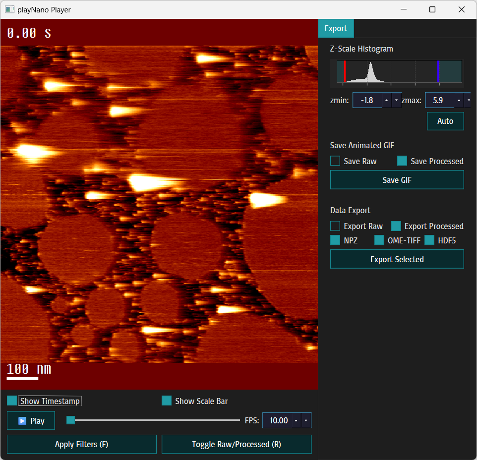

playNano Documentation¶
Welcome to playNano, a Python toolkit for loading, processing, analysing, and exporting high-speed AFM (HS-AFM) time-series data.
playNano provides a reproducible, provenance-aware workflow for handling AFM videos from raw instrument files to flattened, filtered, and analysed outputs. The toolkit includes a command-line interface (CLI), an interactive GUI for veiwing data, and a modular analysis system that supports both built-in and custom extensions.
{kind=link}

Welcome to playNano - a Python toolkit for loading, processing, analysing and exporting high-speed AFM (HS-AFM) time-series data (.h5-jpk, .jpk, .spm, .asd). This documentation covers installation, command-line usage, the PySide6 GUI, processing filters, data export, analysis pipelines, and the API reference.
Quick links¶
Introduction - overview of playNano’s motivation, design, and core workflow
Installation - how to install playNano (pip / conda)
Quickstart - 1-minute example: open a file, apply a filter, export GIF
Command Line Interface (CLI) - full command-line reference and examples
GUI: Interactive Playback - GUI walkthrough, keyboard shortcuts and export workflow
- Processing - filters, masks and pipeline behaviour
Processing Operations Reference - reference of all built-in processing operations
Exporting Data - exporting data and GIFs from CLI, GUI, or programmatically
- Analysis - running analysis modules and provenance
Custom Analysis Modules - creating and registering custom analysis modules
What’s New in playNano 0.1.0 - highlights of the latest release
Changelog - release notes and history
Quickstart (example)¶
# show a file in the interactive GUI
playnano play ./test/resources/sample_0.h5-jpk
Note
See Quickstart for step-by-step examples.
User Guide Overview¶
The User Guide is divided into two parts:
Getting started¶
Introduction - overview of playNano’s motivation, design, and core workflow.
Quickstart - a standalone, five-minute overview showing how to load, process, and export AFM data.
Notebooks - interactive Jupyter notebooks demonstrating typical workflows and parameter exploration.
Practical Guides¶
Installation - detailed installation and environment setup.
Command Line Interface (CLI) - running batch processing, exports, and automation from the command line.
GUI: Interactive Playback - exploring AFM stacks interactively and exporting results.
Processing - applying filters, masks, and flattening operations with provenance tracking.
Analysis - running feature detection and tracking pipelines.
Custom Analysis Modules - extending the analysis system with your own modules or research methods.
Exporting Data - saving processed data and analysis results in open formats.
Each guide expands on concepts introduced in the Quickstart, combining practical examples with deeper technical reference.
Contents¶
User Guide¶
API Reference¶
API Reference
What’s New¶
What's New